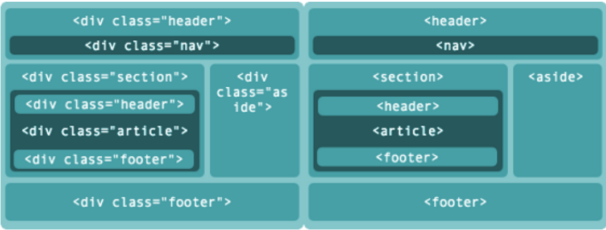

Tudo que você for criar na web começa e termina com HTML, e com certeza para
você ser um desenvolvedor Full-Stack completo você precisa domina-lo bem.
Impossível você desenvolver qualquer tipo de aplicação web sem dominar o
funcionamento do HTML, pois ele estará presente desde o início do projeto e
será o responsável por muitas partes cruciais durante toda a sua elaboração.
Se tratando de projetos maiores e que demandem uma equipe de
desenvolvedores, você precisa redobrar sua atenção quanto a semântica do seu
HTML. Se a semântica não estiver bem-feita, o site terá dificuldade de aparecer
nos mecanismos de buscas, irá ter problemas com a acessibilidade, e com o
tempo até a manutenção será prejudicada.
Mas antes de entrarmos nessa questão da semântica, vamos entender de fato as
mudanças que ocorreram do HTML tradicional para o HTML5 que temos hoje.
A evolução do HTML
A evolução para o HTML5 veio para transformar e facilitar a forma de escrever HTML, trazendo dois conceitos básicos e diferentes:
É uma versão mais sofisticada, com novos elementos, atributos e comportamentos.
Traz com ela um conjunto maior de tecnologias que permite o desenvolvimento de aplicações e sites diversificados e com um poder incrível. Esse conjunto tem um nome e se chama HTML5 e friends e muitas vezes abreviado apenas como HTML5.
A semântica das novas marcações do HTML5
Nas versões passadas do HTML não havia tags com uma semântica adequada para cada uma das divisões do layout. Dessa forma, os desenvolvedores acabavam usando a tag < div > para todas as situações, e criando seus próprios
padrões de nomenclaturas através dos atributos id ou class.
No HTML5 foram criadas varias tags semânticas para indicar aos user-agents quais conteúdos estão sendo inseridos em cada uma das divisões da página, organizando e padronizando o desenvolvimento.

Exemplo de cabeçalho com o elemento < header >
O novo elemento < header > é utilizado para definir o cabeçalho de uma página ou seção, e pode conter logo, títulos, menu de navegação, campo de busca, etc.
Navegando de formaGlobal com o elemento < nav >
O elemento < nav > serve para agrupar uma lista de links para outras partes do site, seja essa lista de navegação local ou global. Esses blocos de links podem estar em diferentes partes do layout, como no cabeçalho ou no rodapé.
Seções diferentes com o elemento < section >
O elemento < section> é o menos especifico entre as novas tags. A diferença do < section > para um < div > é que o primeiro serve para dividir o conteúdo em diferentes seções, que podem conter elementos como < header > ou < article >, enquanto o segundo divide qualquer conteúdo, sem uma finalidade específica.